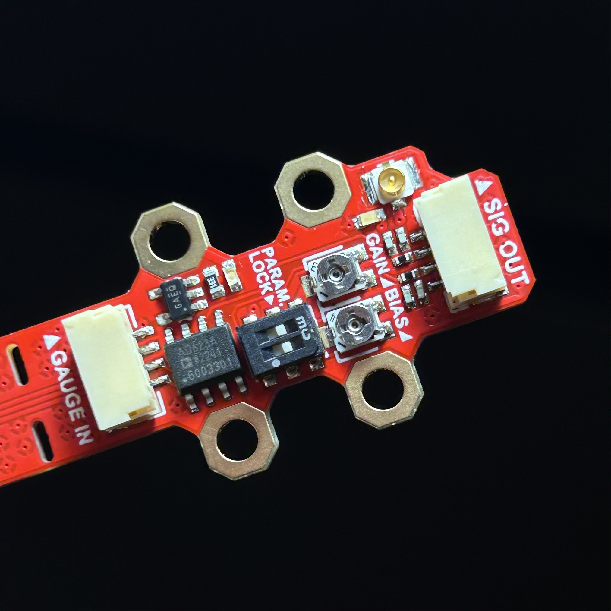
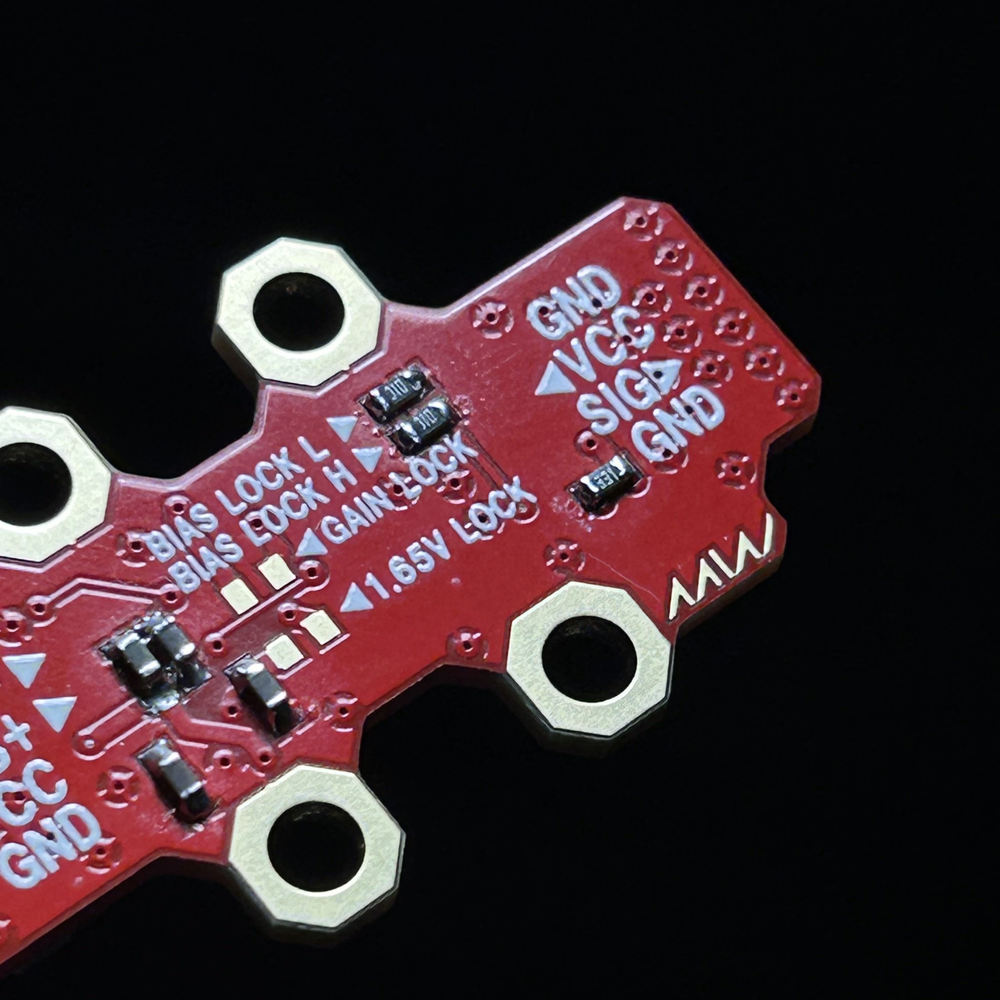

5/17/2024 (written 1/6/2026)
A little project I made as part of Purdue Formula SAE during my sophomore year. It was made to read strain gauges on suspension rods to give our team more insight into vehicle dynamics. Well, it never actually went on the car. I had difficulty managing schoolwork and my commitment to the team, so I ditched the project as I moved onto junior year. Sad, but this was my first experience with analog circuits and I still learned quite a bit. I'm actually writing this over two years after this happened, but I'll try my best to remember as much as I can.
I went into this project as a sophomore with zero experience with analog circuits of any kind. I've only heard of op-amps, but never even touched one. So when I was given the task to work on a strain gauge amplifier circuit, I quickly started reading up as much as I could. I also started reading about strain gauges.
Coincidentally, I was learning about wheatstone bridges in my electronics lab class at the time, so that helped a lot with understanding how strain gauges are amplified. I eventually learned that I will have to use a differential amplifier connected to the strain gauges set up in a wheatstone bridge configuration.
Among the many parts in my class lab kit were some INA121 diff amps, so I used them. With a teammate, we quickly made a janky circuit on a breadboard. I'm not sure how we tested the circuit as I don't think we had a strain gauge to test with just yet. But I guess the circuit seemed promising, so I designed a quick PCB in Altium and manufactured a few prototypes. It was also at this stage I learned that op-amps require a positive and negative voltage rail, which was crazy to me as I had only worked with digital circuits before, where numbers didn't exist below zero.
I called it W.H.A.M!, short for WHeatstone bridge AMplifier.
I made it as small as I could, with mounting holes lining the sides so that the PCB can be easily zip-tied to a suspension rod. W.H.A.M! takes +/- 5V to power the INA121 diff amp, which is connected to four JST-SH connectors wired as a wheatstone bridge. My idea was that the strain gauges can be connected with the JST connectors, and I can just solder a resistor across the JST connector's footprint if that leg of the bridge wasn't going to be a strain gauge.
Looking at the pinout barked on the underside now, I'm a little confused on why I added a port for the wheatstone bridge's raw outputs and excitation voltage. It's been a while since I last studied them so I might just be the stupid one here. Maybe sophomore Eric was cooking.
Anyways, these worked pretty poorly. I think we eventually saw some signal output, but it was nowhere near the amplification that we desired. I also remember getting quite confused on the whole dual supply thing. So I decided to make a second version using a different op-amp. By this point I learned about single-supply and rail-to-rail op-amps. I figured these would make life much easier for me, so I went on Digi-Key to shop for op-amps.
I eventually landed on the AD523 from analog devices. I checked that it operated at a single 3.3V supply and its output swing reached close to either ends of the rail. So again, I cooked up W.H.A.M! Mk. ][, again on Altium. This time, I added a bunch of goodies, like adjustable and lockable bias and gain settings, a precision voltage reference, and a coax jack for the output signal.
I think W.H.A.M! Mk. ][ looks breathtakingly gorgeous. It looks like some high-tech jewelry from the future.
Anyways, you can see a pair of potentiometers and DIP switches on the top side. The pots are for adjusting the gain and bias of the AD623. I added these because the Mk. 1 prototypes' outputs didn't match what we expected, and the resistors were fixed value, so it was hard to tune the op-amps to get a correct output.
On the bottom side you can see a bunch of pads for resistors. These are pads for fixed-value resistors if you want to set a hard value for the gain and bias. I figured once mounted, W.H.A.M! would be subject to a lot of harsh vibration, which might throw off the potentiometers. So I intended these pads as a way to lock in the op-amp's parameters once tuned. The little DIP switch on the top side, underneath the resistors, switches the gain and bias between the pots and fixed-value resistors.
The bias lock L and H resistors form a voltage divider to configure the AD623's output bias. There is also an option to simply set the bias to 1.65V with just a single 0 ohm jumper. The gain lock resistor pad allows to set a fixed gain with a single resistor.


Close-up of W.H.A.M! Mk. ]['s configurability. Pots adjust parameters, resistor pads allow for fixed values. Switches change between either.
W.H.A.M! Mk. ]['s flexibility also extends to its physical design. It's actually split into two parts, the amplifier itself and a breakaway tab for the strain gauges. The parts are wired on the PCB, but they can be snapped off and connected with a JST-GH locking connector. This way, the entire device can be mounted on a suspension rod, or just the strain gauges, while the amplifier part stays somewhere else.
For the wheatstone bridge on the breakaway tab, I decided to forego the JST connectors from before, and just added large 1206 footprints to solder strain gauges to.
So, how did it perform? Well, here's where my memory is fuzzy. I remember the outputs actually behaved more or less how I expected them to. By this point I had the strain gauge application process down, and I had a whole bunch of strain gauges given to us for free from a manufacturer after I begged them for some with a politely written e-mail. So I tested W.H.A.M! Mk. ][ in a quarter-bridge configuration with a strain gauge applied to a tie rod.
Now, it was nice to see the output actually correspond to the stress I put on the suspension rod, but there was still a bit to be desired. I was expecting a swing of almost the full 0-3.3V range, but I remember it was not quite that, even with the adjustable parameters (which worked perfectly by the way). But reading the AD623 datasheet again now, it says the output swing goes from 0.2V to Vdd - 0.5V, so maybe the swing I observed was to be expected after all. But still, I think the signal was noisier than I wanted.
But that wasn't the biggest issue. The stress to measure was axial, not lateral. Meaning, the strain gauges had to be able to pick up the tie rods stretching and compressing along its linear axis, and not the bending like I was testing with. I had no idea how to apply such a force, as bending it was already hard enough. Worse yet, the rod's axial stress would be much harder to measure than lateral stress, since it stretches/compresses much less than it bends.
This meant I had to fiddle around with different bridge configurations, as well as different orientations of the gauges themselves. At this point, I was getting quite confused at the whole mechanical part of this project, and I eventually got bored and burnt out. I was about to be a Junior, school was constantly on my ass, and I couldn't afford to dump more hours into this project. So here's where the story sadly ends.
Still, I'm really glad I got to work on W.H.A.M!. It was a great introduction to the world of op-amps and instrumentation. Plus, writing this project journal right now, it was pretty sweet looking through old photos and remembering the sleepless nights I spent on this project.